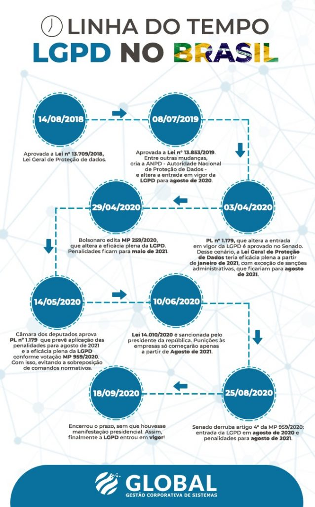

Introdução à Informática - Checkpoint 02
Ética na Computação
Mais de 70% dos consumidores desconhecem a LGPD, aponta pesquisa
Segundo pesquisa realizada pela Boa Vista, mais de 70% dos consumidores brasileiros ainda não sabem do que trata a LGPD.
Segundo pesquisa realizada pela empresa de inteligência de crédito brasileira Boa Vista com mais de 500 consumidores, entre agosto e setembro de 2020, mais de 70% dos entrevistados revelaram que desconhecem a Lei Geral de Proteção de Dados (LGPD). A nova lei, que oficialmente entrou no último mês de setembro, estava sendo discutida desde 2018.
O resultado do estudo mostra a importância da disseminação de informações sobre a LGPD e como o consumidor deve estar ciente de seus direitos em relação a proteção e privacidade de seus dados pessoais nos mais diversos serviços e plataformas on-line. O Data Protection Officer da Boa Vista, Paulo Watanabe, destacou no site oficial da empresa que “apenas 1/3 dos consumidores tem consciência do que é a LGPD. É importante chamar atenção para a segurança de dados e a LGPD para que se evite o uso indevido de informações pessoais, o que pode acarretar uma série de prejuízos, inclusive financeiro”.
Entre outros dados da pesquisa, 77% dos entrevistados destacaram que não se preocupam com o uso indevido de seus dados pessoais. No entanto, esse cenário de preocupação do consumidor com a proteção de seus dados não é refletida em suas ações de proteção, já que 53% disseram que nem sempre se preocupam com as medidas de precaução ao informar seus dados a terceiros. Além disso, 88% dos entrevistados informaram que não se sentem totalmente seguros em fornecer o CPF em uma compra ou qualquer outra transação.
Segundo outra pesquisa realizada entre junho e julho de 2020 com mais de 400 empresas com atuação no Brasil, 64% das organizações ainda não estavam em conformidade com a LGPD. O levantamento foi feito pela Akamai Technologies, empresa americana de serviços e performance de tráfego global na internet. Em caso de descumprimento da lei, a empresa ou responsável pelo serviço pode receber desde advertências a multas que podem chegar a até R$ 50 milhões.
Confira o infográfico abaixo com as datas de como a lei foi implementada no Brasil:
 Fonte: Global Gestão Corporativa de SistemasRelação da Notícia com a Matéria em Aula
Apesar de ser uma notícia do final de 2020, devemos considerar que foi uma lei que estava sendo discutida desde 2018, no entanto, o desconhecimento de uma lei tão importante demonstra ser alarmante. Se ainda consideramos pesquisas recentes do PROCON, como na notícia publicada no site Infor Channel, o número ainda mostra preocupação. Isso porque, conforme foi visto na matéria em sala de aula, "a informação é a moeda corrente do poder", ou ainda, "os dados são o petróleo da Internet".
A capacitação, adequação e criação de cargos é muito importante para que as empresas estejam dentro da lei e não ofereçam riscos com os dados coletados de seus usários. Esse investimento pode ser muito importante não apenas evitar multas que milionárias, mas também para proteção de dados de clientes. Empresas que mais que se adequarem e entenderem rapidamente o quanto importante é ter relações transparentes e seguras com o público estarão à frente da concorrência. Uma vez que essa ação tem consequência na credibilidade e reputação do negócio.
Grupo

-
Braulio Portela
- Segurança Informática
- Ética na Computação
-
Douglas Gonçalves
- Paradigmas de Programação
-
Geovane Motta
- Virtualização
-
Rodrigo Marrama
- Redes de Computadores
- Internet
GitHub